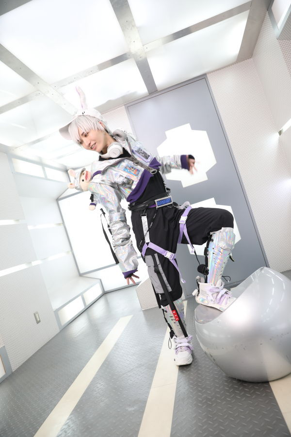
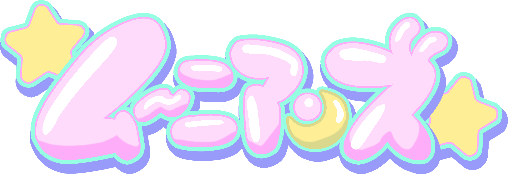
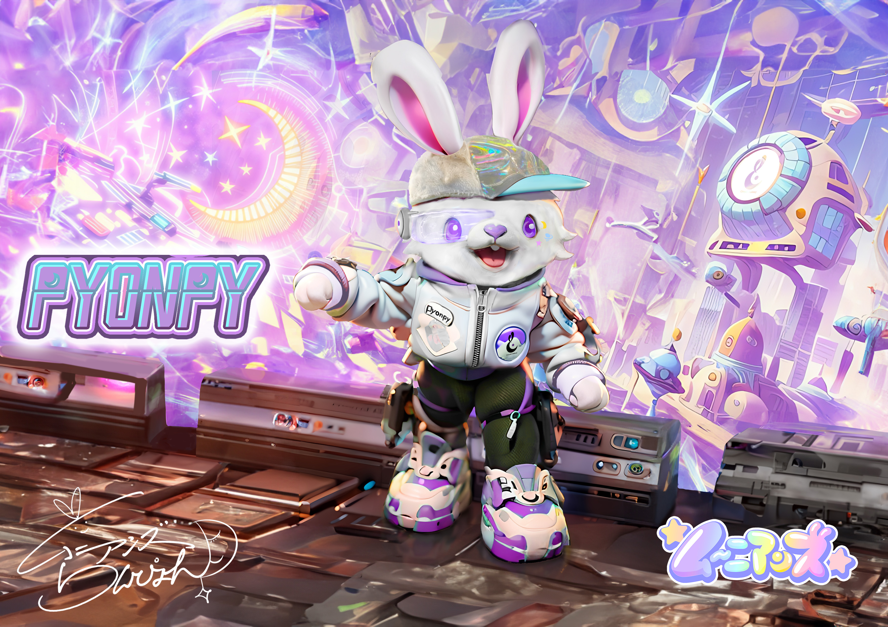

MOONIAN / 01ツッコミ担当RANPYON
らんぴょん ✧
地球人とムーニアンのハーフ。
月と地球の架け橋になる、二人組のツッコミ担当。
- BIRTHDAY
- 7月21日
- FAVORITES
- アート・コスプレ・脚本


地球のみんな、
会いたかったで！
01 / OUR LITTLE UNIVERSE
☾ 月の内部都市 / INNER MOON CITYパステルの建物、きらめくネオン。
ここは、月の内部に広がる都市。
らんぴょんとぴょんぴーが暮らす世界です。
「ムーニアン＝月人」たち、ムーニアンズ。
三日月大使館で出会った二人が、
笑いと愛で、月と地球をつなぎます。

二人の出会いの場所、三日月大使館。
月と地球をつなぐ物語は、ここから。
かわいい未来で、きみを待ってる。 ↗
02 / MEET YOUR MOON FRIENDS
はじめまして。
きみのことも、教えてな。

MOONIAN / 01ツッコミ担当地球人とムーニアンのハーフ。
月と地球の架け橋になる、二人組のツッコミ担当。

MOONIAN / 02ボケ担当もふもふの姿をした、月生まれのムーニアン。
ムーニアン語でおしゃべりする、二人組のボケ担当。
フルネームは、クリサリアス・ピョン・ピ。三日月大使館では、らんぴょんの先輩。
ムーニアン語は、翻訳酸素カプセルと人工知能「ヤナビス」を通して地球の言葉へ。地球のみんなとの会話を楽しんでいます。
Instagramで会う ↗☾ 月でのプロフィールと、地球での活動。それぞれの物語を楽しんでね。
03 / LETTERS FROM THE MOON
04 / A GLIMPSE OF OUR DAYS
05 / OUR EARTH CHRONICLE
笑って、出会って、また一歩。
二人の足あとをたどろう。
イオンモールKYOTOで、らんぴょんがトークコーナーのMCとして出演。ニューヨーク、コロコロチキチキペッパーズと共演。
FANYの公演レポート ↗参考記事に記録された、結成からの歩み。
「クセすごGP」出演との記録
「わずかなじかん」／新宿ブリーカー
ことわざネタを披露
吉本SHOWROOM道 配信ライブ第3回ファンルーム編 優勝との記録
「SHOWROOM道」／渋谷SHOWROOMスタジオ
NSC東京卒業
「お披露目会」／ルミネtheよしもと
翻訳機ネタを披露
TBS「バナナサンド」出演との記録
ムーニアンズ結成
この欄は参考記事に基づく記録です。テレビの詳細な放送日・正式番組名などは、番組や主催者の発表で確認できた情報から補足します。
06 / STAY IN OUR ORBIT
動画で笑ったり、日常をのぞいたり。
きみの好きな場所で、ムーニアンズとつながろう。